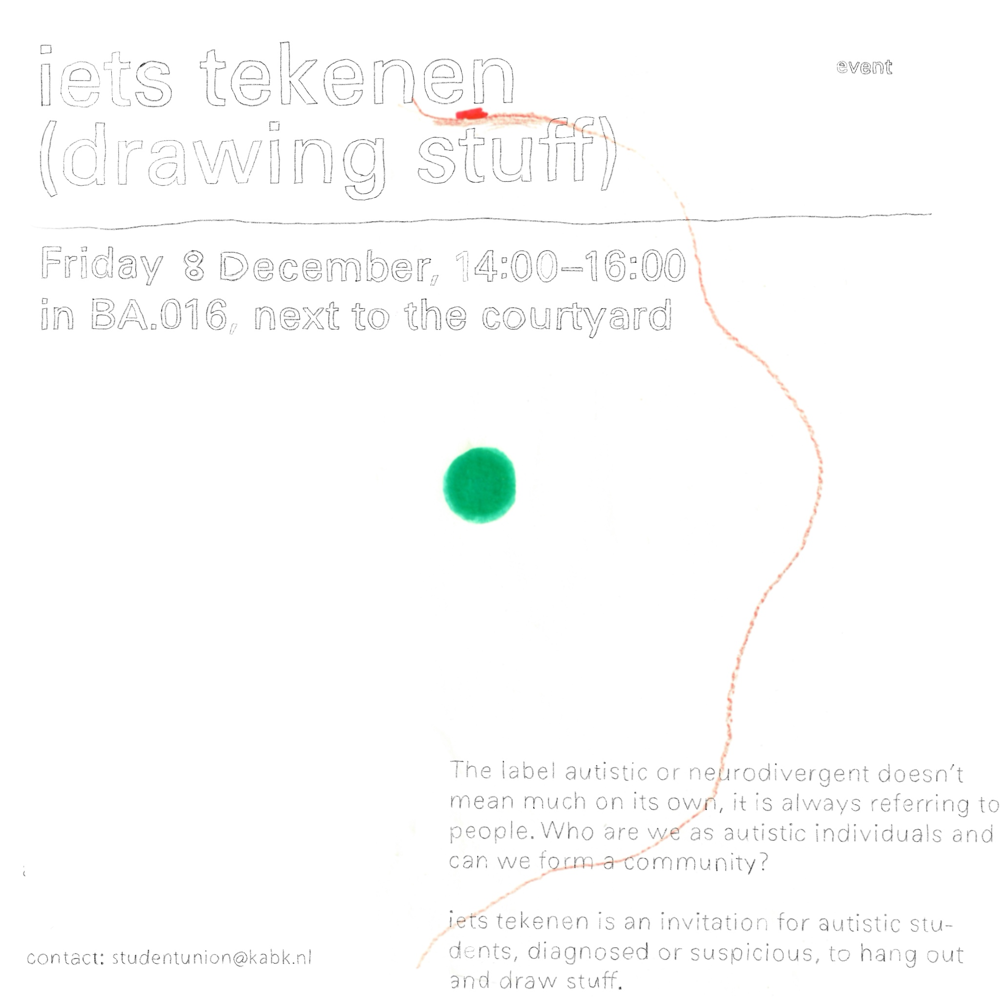
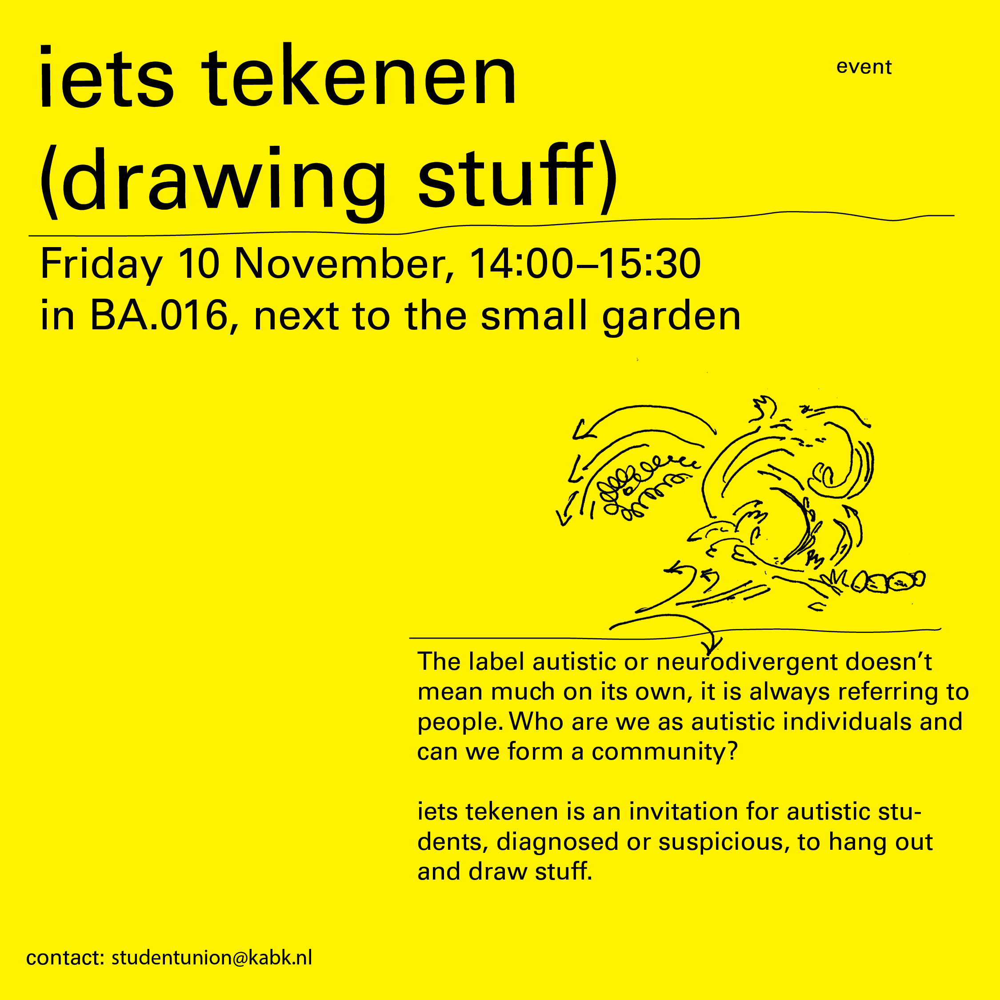
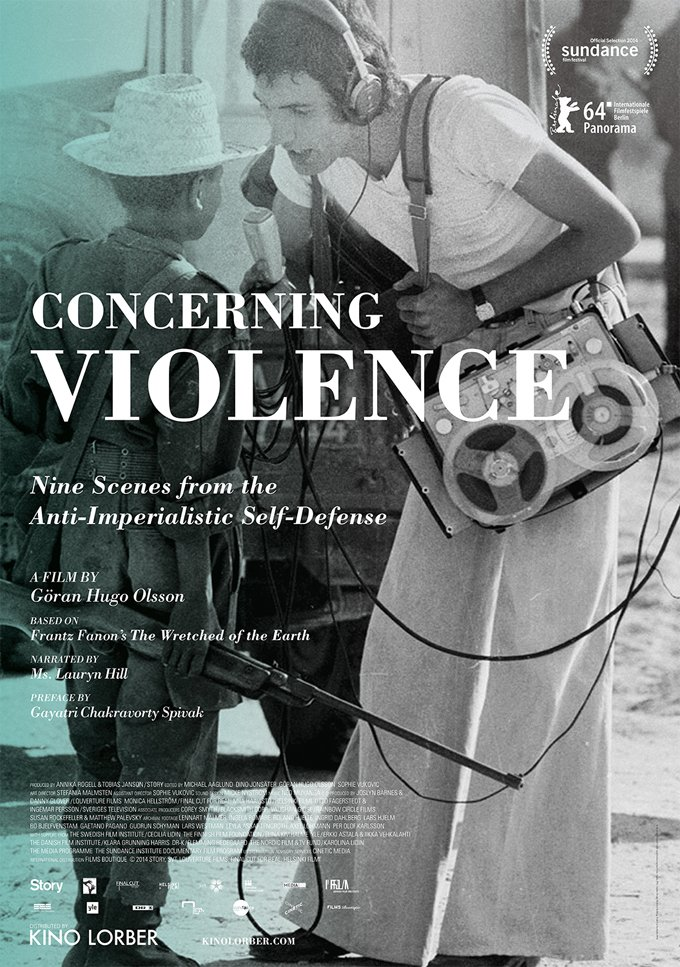
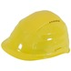
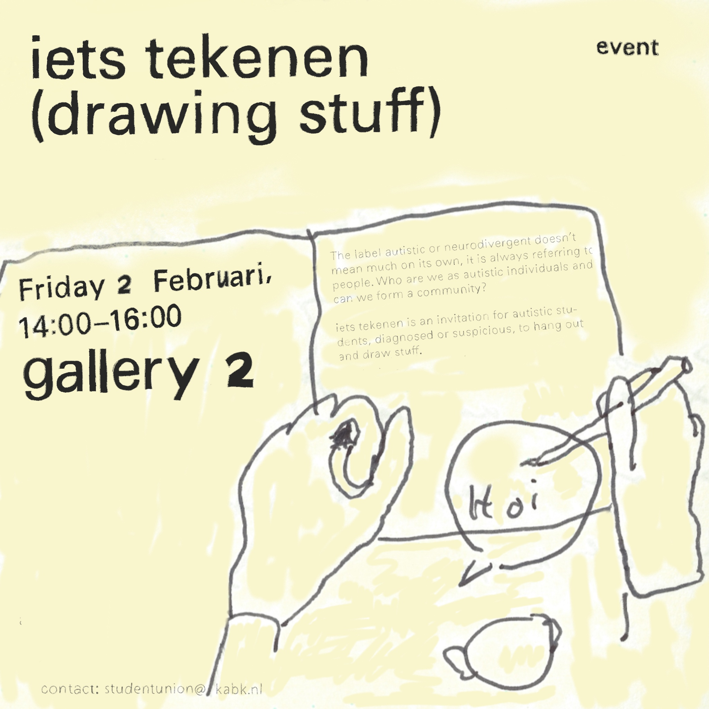

agenda:
-
open doors
12 March 2024, 13:00 - 16:00 -
iets tekenen (drawing stuff)
15 March 2024, 14:00 - 16:00 -
Safe Space (just kidding)
18 - 21 March 2024
-
open doors
13 Februari 2024, 13:00 - 16:00 - buy lapsang tea
- buy raspberry pi
- describe our financial situation in our by-laws
- have a theme song for the open doors
- student from HKU does research about the art market and how to prepare art students for it and came by during the open doors to pull us into a brainstorming session
- student from interior architecture approached us about conflict and trouble graduating, we set up a next meeting
-
open doors
6 February 2024, 12:00 - 16:00 - meeting with Niels Schrader (head of NLN)
- ...
- mushroom radio came by
- collaborate on events
- broadcast open doors
- radio set up in BD.111
- help them with a budget proposal
- kabk student union guest mix
- why is there no transparency regarding the budget of the academy and its influence on the managements decision making?
-
iets tekenen #3
2 February 2024, 14:00 - 16:00 -
open doors
30 January 2024, 13:00 - 16:00 - meeting with management about the petition
- the petition is out of solidarity with individual students from Bezazel
- we noted how it would help to take the context into account from which the student
union came to be
- the union formed from a frustration about the untransparent nature of KABK's
management (also regarding KABK's history of misconduct) and a lack of
agency for the students
- we thus operate in an transparent and explicit way to counteract the strategy of putting things under the rug
- the union formed from a frustration about the untransparent nature of KABK's
management (also regarding KABK's history of misconduct) and a lack of
agency for the students
- the Management takes a neutral stance, or a 'positive' stance how Management phrases it
- they abstain from any political stance
- they drew the conclusion from their previous experience of explicititly supporting Ukraine that it's better to stay silent
- we stated that we prefered the other conclusion of being consistently critical instead of avoiding to do so all together
- they abstain from any political stance
- Management:
- appreciates that we take this on
- we are a slow institution because we try to do things carefully
- the reaction on Ukrain was a learning curve
- what is the role of a 'safe space'? who can have a 'safe space'?
- this shouldn’t be a wall we can hide behind
- we try to create an open space for students with all opinions and backgrounds
- I am really in support of voicing concerns as students and in politics, but we choose not to do this as an institution
- what is the role of a 'safe space'? who can have a 'safe space'?
- kabk student union:
- why is being against genocide a matter of debate?
- Management:
- as an institution I don’t want to go there
- if you take a position it inhibits the space of others experience
- we get flack from both sides
- Israeli students feel unsafe
- kabk student union:
- why was it a mistake to take a position?
- Management:
- we had russian students who felt really cornered by our taking a stance
- kabk student union:
- taking a neutral position also makes students feel unsafe
- Management:
- we start from the position that we are an educational institution not a political institution
- kabk student union:
- what does that mean? everything is political
- Management:
- why was it a mistake to take a position?
- kabk student union:
- there’s a general consensus that departments are not talking to each other. the physical space and the way in which courses are laid out make it so that departments are isolated
- let's open up a conversation for the community
- Management:
- I am afraid of the potential aggresion of the discussion
- I am proud of how it is going up until now
- every student should have the possibility to feel safe
- Management:
- at the same time we should organise dialogue
- this would be easiest within departments
- at the same time we should organise dialogue
- kabk student union:
- let's make it a project!
- we should invite people that could educate us / the community and have a general assembly
- let's move past the idea that a difference in opinions must necessarily
seclude each other in conversation
- a bit of optimism is needed for this
- Management:
- we are not trying to convince each other of our different positions but how can we cross bridges?
- kakb student union:
- to do this it is also important to differentiate between feeling unsafe and feeling uncomfortable
- Management:
- let's have the conversation in a large, communal setting
- it didn't go well in other educational institutions
- Management:
- we are struggling with how to facilitate this dialogue
- kabk student union:
- better than just deciding that it was a mistake is to explore how to have this dialogue
- we have courses on decolonization and are already within a political frame
- we can't abandon discussion
- Management:
- we want students to have opinions
- art is political. life is political
- but as an institution we try to be open to all opinions to allow differences to happen within the academy
- but we should also be aware of our context (NL, Royal, Liberal)
- we want students to have opinions
- Management:
- we need to welcome dissenting opinions. this is also why we take no position
- kabk student union:
- we should open the floor up to the entirety of the community
- Management:
- it needs to be a setting which creates dialogue but not debate
- we need to discuss details like whether the initiative comes from Management or student union
- kabk student union:
- we know that it's possible for management to facilitate this, looking at the example of the response to the war in Ukraine (talk in the tent)
- you just need to want it
- next meeting we need to make it all concrete
- end of meeting
- open doors
- we need to elaborate on our budget in our bylaws
- 'students for palestine' from the conservatoire came by and introduced themselves!
-
open doors
23 January 2024, 13:00 - 16:00 - meet with Maaike
- meet with Management
- book a room for iets tekenen #3
- regarding a rumour: ask for transparency surrounding the academies budget
- some students do not have enough money to go on excursion with their department. this is however mandatory for them to obtain enought study points. how could we or their department help them out?
- some academies have a 'hardship' fund
- could we share our eventual community space with teachers?
- invite teachers for a meeting where we whisper in their ear how to unionise
- what do we put on the TV
- kitschy pr video?
-
open doors
16 January 2024, 12:30 - 16:00
in Gallery 4 - collaborate with mushroom radio
- do an event during rewire
- organise a zine making workshop
- organise a series of events during the day/week for the elimination against racism (21
March)
- movement bootcamp
- organise a series of event revolving around precarity (in April)
- organise iets tekenen #3
- organise an iets tekenen inviting students from other academies
- buy a bakfiets for student use
- ask about the idea for a student bike repair shop
- make a guide for how to live free in the Hague
- counter kitchen
- microwave cookbook
- let's claim BP.111 as a common space for student initiatives
-
open doors
9 January 2024, 14:30 - 17:00
in the canteen - organise workshops
- button making
- life after graduation
- marrying a visa
- how to be a professional
- composing a manual for free stuff in the Hague
- movement bootcamp
- …
- make an open call
- with guidelines
- workshops that benefit the community
- community ≠ a 'universal' student body
- community = participants / students in need of a community
- interdepartmental
- workshops that benefit the community
- with guidelines
- make position clear
- gathering to think about what it means to unionise
- meet with feedblack
- how do we keep a dialogue with other student initiatives in the academy?
- demand response from Management about petition to cut ties with bezazel art academy in Israël
- reach out to Israëli students to have an opportunity for dialogue
-
iets tekenen #2 (drawing stuff)
8 December 2023, 14:00 - 16:00
in BA.016, next to the courtyard

-
movie screening 'It Must Be Heaven'
6 December 2023, 18:00 - 20:00
in Cinema Room (BA.204) -
open doors
4 December 2023, 12:00 - 16:00
in Gallery 4 - send ib47 forms to finances for payments
- screenprinting for palestine
- movie screening for palestine
- set up a shared meeting with green and blue office, mushroom radio, film club and newspaper
- canteen petition
- how is the selection procedure of the new head going?
- set up structured trajectory for urgent help to students
- ideas for workshops:
- claymaking weapons workshop
- zine making workshop
- what do we put on the tv?
- student who experienced repeated racist harassement came by to talk and brainstorm
- collect similar testimonies
- log how kabk previously dealt with racism
- map out what the school can do
- what happens when you try to report a racial crime?
- send a letter from kabk to police department
- how to provide education and awareness towards the city
- kabk as seperated bubble from racist city
- open up more to the outside word as an art academy
- practical workshop how to deal with discrimination
- student housing survey
- display in the library
-
open doors
27 November 2023, 12:00 - 16:00
in Gallery 4 - programming
- iets tekenen #2
- decolonization event
- evaluation
- how can we make people comfortable to talk?
- smaller groups?
- focused conversation or willingly distracted?
- more structure?
- warm up
- introduction
- focus
- discussion
- next edition about election results
- recurring safe space opposing racism
- how is the recruitment process of the new director going?
- bodies within kabk are too disconnected (canteen, concierge, facilities, library etc.)
- can students be more involved troughout the whole academy structure?
- website
- menu
- about
- resources
- membership
- contact
- sign-up form with google form
- student harassed nearby kabk
- racist police
- Den Haag Meldt
- how can we emphasize the urgency against the police and our institutions?
- collect similar testimonies
- solidarity at next decolonization event
- how can we structure the to-do lists and goals of the union better?
-
open day kabk
25 November 2023, 10:00 - 16:00
in Gallery 1 -
what does decolonization mean in the context of our art academy?
22 November 2023, 17:00 - 21:00
in the Auditorium -
open doors
20 November 2023, 12:00 - 16:00
in Gallery 4 - decolonization event
- contributions
- publicity
- reader
- food
- shopping
- making
- transporting
- renting equipent
- movie screening
- differentiate union?
- field trip to W139
- complaints about 100 days programme
- interdepartmental football tournament
- silent/pray/chill room
- regular group talks
-
open doors
13 November 2023, 12:00 - 16:00
in Gallery 4 - meeting with management
- institutional slowness
- kabk student union operates from a lack (of community)
- alumni not allowed as members
- found alumni association
- financial logistics
- double standards of kabk regarding 'neutrality'
- how to let israeli students feel safe?
- sign-up form
-
iets tekenen (drawing stuff)
10 November 2023, 14:00 - 15:30
in BA.016, next to the courtyard

-
open doors
6 November 2023, 12:00 - 16:00
in front of Gallery 4 - website
- pamflet
- iets tekenen (drawing stuff)
- mailcontact with management
- finance
- poster template
- TV programming
-
open doors
30 October 2023, 12:00 - 16:00
in Gallery 4 - mail contact with management
- by-laws
- finances
- movie screenings
- budget cuts
- website
- shared meeting with other student initiatives
- open day
- student union statement about gaza
- how do we get access to our budget?
- 'iets eten', autistic students meeting
- fundraising event/panel discussion
- who do we invite?
- posters with questions as a starting point
- cooking?
- signal group
- group chat with all student initiatives
-
movie screening 'It Must Be Heaven'
26 October 2023, 19:00 - 21:00
in Cinema Room (BA.204) -
movie screening 'Concerning Violence'
25 October 2023, 19:00 - 21:00
in Cinema Room (BA.204)

-
movie screening '5 Broken Cameras'
24 October 2023, 19:00 - 21:00
in Cinema Room (BA.204) -
open doors
23 October 2023, 12:00 - 16:00
in Gallery 4 - TV
- display wall
- get in contact with Photography students
- movie screening poster
- [rumour]: ISTs are reconsidered due to tight budget
- open day?
- invite Jonathan Hielkema and Pawel Pokutycki
-
online meeting
16 October 2023, 13:00 - 14:00
- how can we engage more dynamically?
- paid labour/ free labour
- open call for dialogue with photography students about lack of space
- open day
- performance
- movie screening
-
open doors
9 October 2023, 12:00 - 16:00
in Gallery 4 - visibility
- design sketches
- get a video projector to show the open doors agenda to all the participants
- [rumour]: ISTs are reconsidered due to tight budget
- open day?
- invite Jonathan Hielkema and Pawel Pokutycki
-
open doors
2 October 2023, 12:00 - 16:00
in Gallery 4 - visibility
- access to email lists
- announcement wall
- TV
- launching moment
- storage shelf placement
- printing finances
- lack of space photography department
- work together with the green office
-
open doors
25 September 2023, 12:00 - 16:00
in Gallery 4 - permanent student initiative space
- worked hours spreadsheet
- storage shelf
- printing finances
- graphic identity
- portal
- stickers
- seperate website
- task division
- new members
- bank account
- programming
-
online meeting
18 September 2023, 15:00 - 16:00
- union IST
- graphic identity
- recurring meeting
- how to present ourselves to the school?
- budget
in BP.111 the small room next to gallery 4 
Every Tuesday we hold our “open doors” at a location in school. We make ourselves, as core members of the Student Union, accessible to the wider community. We hold planning meetings and anyone who would like to participate and add their input is welcome!
in BP.102 (the awkward corner room close to hacklab)
past events:
Here you'll find a quick overview of our past events.
If you are interested in more detailed
documentation of a meeting, discussion or event you can send us an e-mail, we'll send it your way!
in Gallery 2 
The label autistic or neurodivergent doesn't mean much on its own, it is always referring to
people.
Who are we as autistic individuals and can we form a community?
iets tekenen is an invitation for autistic students, diagnosed or suspicious, to hang out
and draw stuff.
Drawing materials will be there, but you are also welcome to bring your own.
'iets tekenen' is a monthly event.
Drawing made during the previous edition.
in BP.111 the small room next to gallery 4
topics:
The label autistic or neurodivergent doesn't mean much on its own, it is always referring to
people.
Who are we as autistic individuals and can we form a community?
iets tekenen is an invitation for autistic students, diagnosed or suspicious, to hang out
and draw stuff.
Drawing materials will be there, but you are also welcome to bring your own.
Due to popular demand and the felt urgency of the first edition 'iets tekenen' (drawing stuff)
is now a monthly event!
Drawing made during the previous edition.
.jpg)
On December 6th from 6PM we will be screening “Tale of the Three Jewels” in solidarity with
Palestine in the Cinema Room, under the umbrella of the Student Union.
The film will be arranged by our lovely member Manu and it’s a romantic drama from 1995 that we
greatly encourage you to drop by and share time to watch alongside us.
topics:
topics:
Solidarity event discussing the ongoing genocide in Palestine, art, and decolonization, as a broader framework.
topics:
topics:
The label autistic or neurodivergent doesn't mean much on its own, it is always referring to
people.
Who are we as autistic individuals and can we form a community?
iets tekenen is an invitation for autistic students, diagnosed or suspicious, to hang out
and draw stuff.
Drawing materials will be there!
topics:
topics:
.png)
We decided to extend the movie screenings for this week with another Palestinian reference, in
solidarity. This time it's Elia Suleiman’s "It Must Be Heaven”, from 2019. In which a man
escapes Palestine for a new beginning, only to encounter the same problems as back home.
It’s a completely different mood and angle than the previous screenings we’ve had this week. But
we hope it adds to the understanding of the complexity of the situation now in
Palestine.
This recommendation was made by one of our viewers from the first evening. And you can check out
the trailer on IMDB.
The Student Union invites you tonight, 26th October, in the Cinema Room from 7PM, room BA
204.
Hopefully, see you then and there!
Thank you for all that showed up last night for the screening of “5 Broken Cameras”! Movies are
always better when seen together and when they foster dialogue. And thank you for the
representative of @studentsforpalestine for
nurturing the discussion.
To continue diving into the topic of the film, apartheid and colonialism, we at Student Union
have taken it upon ourselves to make another screening tonight in the cinema room from 7PM. Room
BA.204.
This time we will be screening a 2014 documentary titled “Concerning violence”. The film
narrates the events of African nationalist and independence movements in the 1960s and 1970s
which challenged colonial and white minority rule.
The documentary film is written and directed by Göran Olsson. It is based on Frantz Fanon's
essay, Concerning Violence, from his 1961 book The Wretched of the Earth.
To read more about it check out wikipedia!
Hopefully see you then and there!

Come one, come all! Tomorrow we screen “5 Broken Cameras” in solidarity with Palestine in the Cinema room, under the umbrella of the Cinema club and KABK Student Union. Hopefully @studentsforpalestine can join us to intro the film. If all goes well :) So we will be delighted to see you then and there!
topics:
topics:
topics:
topics:
topics:
topics: